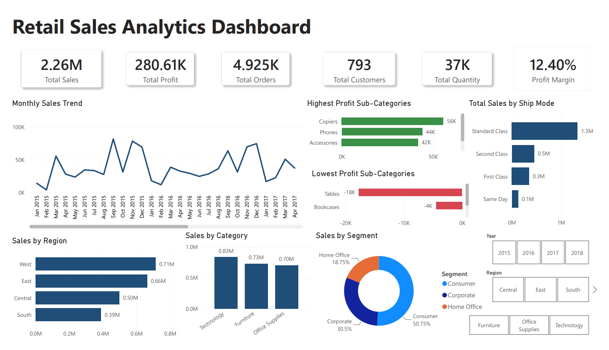

SQL • Power BI • DAX • Data Analytics
An end-to-end retail analytics project analyzing 4,925 transactions to identify customer segments, regional performance, product trends, and business opportunities.
View Dashboard PDF View SQL Queries